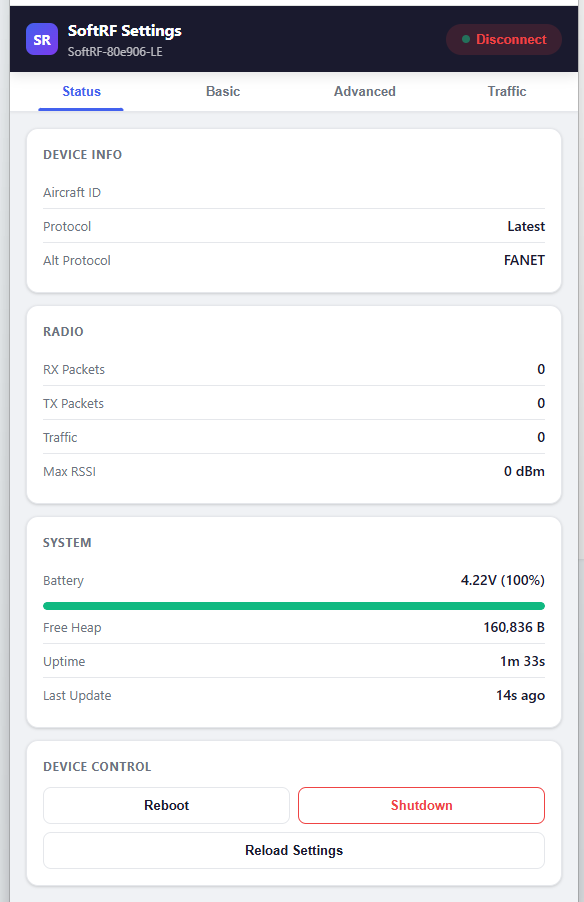
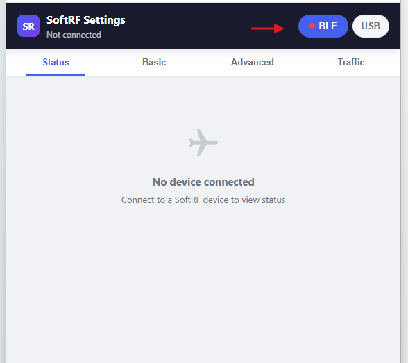
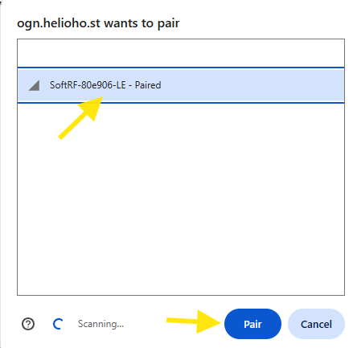

SoftRF WebApp Configurator
How to use the web-based configurator to manage your SoftRF device.
Overview
The SoftRF WebApp Configurator is web based interface to access device settings via Bluetooth. It allows you to:
- View device status and GNSS information
- View battery level
- View current protocol setting
- Backup and restore settings

A hosted version of the configurator WebApp is also available at:
https://ogn.helioho.st/mysoftrf/
Accessing the WebApp
Connecting to T1000E SoftRF via BLE
- Power on your T1000-E device
- On your phone/tablet/computer, open https://ogn.helioho.st/mysoftrf/ in Chrome broser
- Click BLE button
- Select SoftRF device in the prompt, "SoftRF-xxxxxx-LE" and click Pair


Status Page
The home page shows:
- Aircraft ID — unique hardware identifier
- Protocol — transmitted Iprotocol type
- Alt protocol — Second protocol, if chosen
- Radio info — protocol, band, packets sent/received, max RSSI
- Battery voltage — current charge level
- Uptime
- Device Controls — Reboot, Shutdown, Reload Settings
Action buttons on the status page:
Basic Settings Page
The basic settings page (since MB153) shows a shorter, cleaner form with the most commonly needed settings:
- Aircraft ID and ID type
- Protocol, Region, Aircraft type
- Alarm trigger method
- Volume (buzzer)
- Bluetooth mode
- NMEA output destinations and sentence types
- Flight logging options
- Stealth and No-track flags
After changing settings, scroll to the bottom and click "Save and Reboot". Reconnect to BLE afterward and verify your settings took effect.
Advanced Settings Page
The advanced settings page shows all settings with their raw numeric codes and comments explaining values. You can enter codes directly. See the Under the Hood page for code reference.
Settings Backup and Restore
- Download — Save settings.txt to your computer
- Upload — Upload an edited settings.txt (takes effect after reboot)
- Backup — Copy current settings to settingb.txt internally
- Restore/Swap — Swap settings.txt with settingb.txt and reboot
Troubleshooting
Settings not fully loaded
- Refresh the app, re-connect
- Press Load settings button, on the Status tab